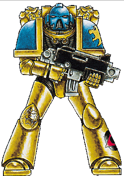

Celestial Lions
| Celestial Lions | |
|---|---|
 Livery of the Celestial Lions Artwork © Games Workshop | |
| Founding | Unrecorded Founding of the 38th millennium; the Twenty-third ("Sentinel") Founding is suspected[a] |
| Progenitor | Imperial Fists (Rogal Dorn) |
| Homeworld | Elysium IX, Elara's Veil (fallen to Chaos) |
| Fortress-monastery | Strike cruiser Blade of the Seventh Son (flagship) |
| Chapter Master | Unrecorded (Ekene Dubaku, assassinated) |
| Allegiance | Imperium of Mankind; member of the Adeptus Vaelarii |
| Colours | Gold, blue and black |
| Size | Fewer than 96 battle-brothers after Armageddon (998.M41) |
| Notable battles | |
| Khattar Insurrection (948.M41), Third War for Armageddon (998.M41), War against the Exilarchy (999.M41 onward), Fourth War for Armageddon (M42) | |
The Celestial Lions are a loyal Space Marine Chapter of the Adeptus Astartes, a successor of the Imperial Fists raised in the 38th millennium. Since the Twenty-fifth Founding they have served, with the Emperor's Spears and the lost Star Scorpions, in the Adeptus Vaelarii, the Sentinels of the Veil, who guard the scattered worlds of Elara's Veil in a backwater of the Ultima Segmentum.[1]
In 948.M41 they were ordered to crush an uprising on Khattar and then watched the Inquisitor in charge destroy the world they had cleansed. A faction of the Inquisition afterwards used the Third War for Armageddon in 998.M41 to try to destroy the Chapter for its protest. Fewer than a company survived, saved from extinction by the Black Templars.[1]
History
[edit]Khattar Insurrection
[edit]The Celestial Lions proved resolute scions of Dorn, but their pride and strict moral code may have helped bring about their near ruin. In 948.M41 five companies were attached to the Inquisitor Apollyon to put down a revolt on Khattar. The orbital defences fell without a fight, and the revolt was broken within weeks. It was found that the priesthood of the Imperial Cult on the world had been corrupted and had led its rulers to Slaanesh. As the Space Marines left orbit, Apollyon ordered the Navy to carry out an Exterminatus with cyclonic torpedoes. The Lions, who had judged the planet cleansed and its population largely innocent, condemned the Inquisitor, as did the captain of the Navy flagship, who could not countermand him.[1]
Third War for Armageddon
[edit]In 998.M41 the whole Chapter was sent to the hive world Armageddon to defend Hive Volcanus against the Ork warlord Ghazghkull Thraka. The intelligence it received was wrong and led it again and again into ambushes. Its senior officers came to suspect it was deliberate, part of an Inquisitorial scheme to remove a Chapter that had opposed the Inquisition for more than ten years since Khattar. Within weeks half the Chapter was dead. At the Mannheim Gap four companies were destroyed in three hours by a Gargant under the warlord Thogfang and Razor Speed Freeks, who had buried tunnels behind the Lions' lines. Snipers were seen to concentrate on the Apothecaries. The last Captain present, Vularakh, was eaten by Thogfang. A strike cruiser was lost in collision with the Flesh Tearers flagship.[1]
The few survivors decided to die on Armageddon. The Deathspeaker Julkhara sent a Storm Eagle to the Black Templars Reclusiarch Grimaldus, who had held Hive Helsreach, so that fellow sons of Dorn would know the truth. The gunship crashed in the Season of Fire, and Grimaldus found its pilot dead. The Black Templars High Marshal Helbrecht intervened, and the Lions' last officer, the Pride Leader Ekene Dubaku, who had killed Thogfang, was made Chapter Master. The Lions left Armageddon aboard the Black Templars strike cruiser Blade of the Seventh Son, which Grimaldus gave them, bound for Elysium IX.[1] The Chapter's last Lifebinder, Kei-Tukh, was found dead against a Land Raider, which the Lions counted the Inquisition's final insult.
Era Indomitus
[edit]The Great Rift cut Elara's Veil off from the rest of the Imperium. A great warhost of Chaos cultists and mutants, the Exilarchy, entered the region, ruled by The Pure, Heretic Astartes who were the corrupted remnants of the Star Scorpions. They fell on the Veil, and half its worlds fell in a century of war. Elysium IX was invaded. Dubaku prepared to evacuate its people and asked Arucatas of the Emperor's Spears to take them to his world of Nemeton. At that meeting aboard the Hex a Callidus assassin sent by the Inquisition, who had posed as a serf, beheaded him. In M42 the Lions sent a company, two frigates and a strike cruiser to Operation Imperator, the retaking of Armageddon from Ghazghkull's latest invasion.[2]
Organisation and beliefs
[edit]The Chapter uses its own names for its ranks: Warleader for a captain, with a black helmet; Deathspeaker for a Chaplain; Spiritwalker for a Librarian; Lifebinder for an Apothecary; and Pride Leader for a sergeant.[1]
Notable members
[edit]- Ekene Dubaku: Pride Leader, then Chapter Master after Armageddon; killed by an assassin in the Era Indomitus.
- Julkhara: Deathspeaker who sent for the Black Templars.
- Vularakh, Dukambe, Vakembei: Warleaders who fell in the war.
Timeline
[edit]| Date | Event |
|---|---|
| M38[b] | Celestial Lions raised |
| late M40 | Twenty-fifth Founding; Chapter joins the Adeptus Vaelarii |
| 948.M41 | Khattar Insurrection; Exterminatus ordered by Apollyon |
| 998.M41 | Third War for Armageddon; Mannheim Gap |
| 998.M41 | Black Templars intervene; Dubaku made Chapter Master |
| 999.M41 | Great Rift opens; Exilarchy invades Elara's Veil |
| M42 | Elysium IX invaded; Dubaku assassinated |
| M42 | Operation Imperator; Fourth War for Armageddon |
See also
[edit]Notes
[edit]References
[edit]- ^ a b c d e f Armageddon: Operation Imperator (11th Edition), pg. 43. Games Workshop. Dembski-Bowden, Aaron. Spear of the Emperor (novel). Black Library, Chs. 2, 22-23.
- ^ Dembski-Bowden, Aaron. Blood and Fire (novella). Black Library. Adeptus Astartes: Successor Chapters (7th Edition) (Limited Release Booklet), pg. 24. Games Workshop.